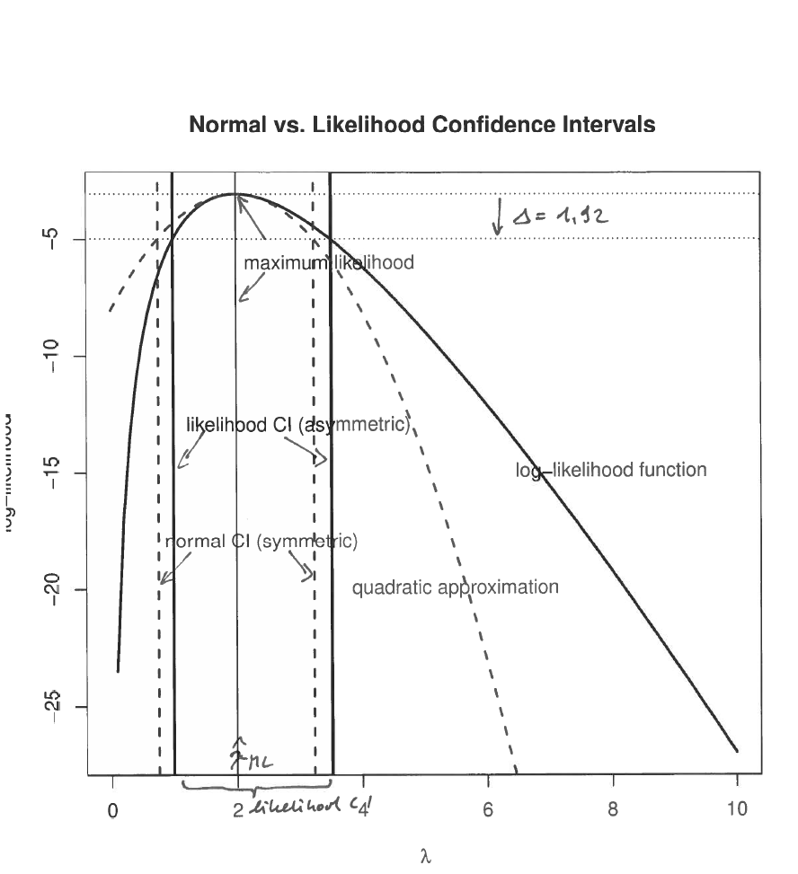
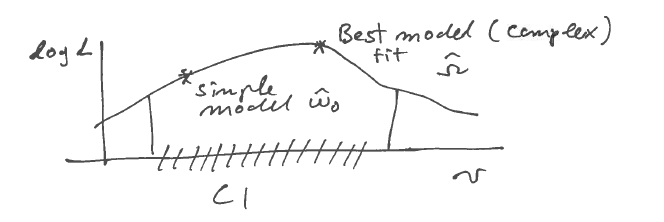

5 Likelihood-based confidence interval and likelihood ratio
5.1 Likelihood-based confidence intervals
Instead of relying on normal / quadratic approximation, we can also use the log-likelihood directly to find the so called likelihood confidence intervals:

Idea: find all \(\boldsymbol \theta_0\) that have a log-likelihood that is almost as good as \(l_n(\hat{\boldsymbol \theta}_{ML})\). \[\text{CI}= \{\boldsymbol \theta_0: l_n(\hat{\boldsymbol \theta}_{ML}) - l_n(\boldsymbol \theta_0) \leq \Delta\}\] Here \(\Delta\) is the tolerated deviation from the maximum log-likelihood. We will see below how to determine a suitable \(\Delta\) further below.
Advantages of using likelihood-based CI:
- not restricted to be symmetric
- enables to construct multivariate CIs for parameter vector easily even in non-normal cases
- contains normal CI as special case
Question: how to choose \(\Delta\), i.e how to calibrate the likelihood interval?
Essentially, by comparing with normal CI!
5.2 Wilks log likelihood ratio statistic
The Wilks likelihood ratio statistic \(W\) is defined as:
\[W(\boldsymbol \theta_0) = 2 \log \left(\frac{L(\hat{\boldsymbol \theta}_{ML})}{L(\boldsymbol \theta_0)}\right)=2(l_n(\hat{\boldsymbol \theta}_{ML})-l_n(\boldsymbol \theta_0))\]
Note we can write the likelihood CI in terms of Wilk’s \(W\) as follows:
\[\text{CI}= \{\boldsymbol \theta_0: W(\boldsymbol \theta_0) \leq 2 \Delta\}\]
5.3 Quadratic approximation of Wilks statistic
Recall the quadratic approximation of the log-likelihood function \(l_n(\boldsymbol \theta)\) around the MLE \(\hat{\boldsymbol \theta}_{ML}\):
\[l_n(\boldsymbol \theta)\approx l_n(\hat{\boldsymbol \theta}_{ML})-\frac{1}{2}(\boldsymbol \theta-\hat{\boldsymbol \theta}_{ML})^T \boldsymbol J_n(\hat{\boldsymbol \theta}_{ML}) (\boldsymbol \theta-\hat{\boldsymbol \theta}_{ML})\]
\[\Rightarrow W(\boldsymbol \theta_0) \approx (\boldsymbol \theta_0-\hat{\boldsymbol \theta}_{ML})^T \boldsymbol J_n(\hat{\boldsymbol \theta}_{ML})(\boldsymbol \theta_0-\hat{\boldsymbol \theta}_{ML})=\boldsymbol t(\boldsymbol \theta_0)^T \boldsymbol t(\boldsymbol \theta_0)\]
Thus the quadratic approximation of the Wilks statistics \(W\) yields the squared Wald statistic!
5.4 Distribution of Wilks statistics
The connection with the squared Wald statistics implies that both have asympotically the same distribution.
Thus, \(W\) is asymptotically \(\chi^2_d\) distributed ( with \(d\) degrees of freedom if \(\boldsymbol \theta\) has dimension \(d\)).
For scalar \(\theta\) (i.e. single parameter): \(d=1\) and \(W\sim \chi^2_1\)
5.4.1 Cutoff values \(\Delta\)
The asymptotic distribution for \(W\) is useful to choose a suitable \(\Delta\) for the likelihood CI since \(2 \Delta = c_{chisq}\).
This yields for scalar \(\theta\) (\(df=1\)):
| \(\kappa\) coverage | \(\Delta\) (\(df=1\)) |
|---|---|
| 0.9 | 1.35 |
| 0.95 | 1.92 |
| 0.99 | 3.32 |
5.5 Example: likelihood CI for exponential model
We consider the parameter \(\lambda\) in an exponential distribution (cf. Question 4 in Worksheet 2).
We observe \(n=10\) observations \(x_1, \ldots, x_n\) with average \(\frac{1}{10} \sum_{i=1}^{10} x_i = \bar{x} = 1/2\).
The corresponding log-likelihood function for this data is \(l_{10}(\lambda) = n \log \lambda - \lambda n \bar{x} = 10 \log \lambda - 5 \lambda\).
From analytic calculations (cf. Worksheet 2) we know that the maximum likelihood estimate is \(\hat\lambda_{ML} = \frac{1}{\bar{x}} = 2\) and that the observed Fisher information is \(J_{10}(\hat\lambda_{ML} ) = n \bar{x}^2 = 5/2\) . Thus, the estimated asymptotic standard deviation is \(\text{SD}(\hat\lambda_{ML}) = \sqrt{2/5} \approx 0.63\), so that the asymptotic normal symmetric confidence interval with \(95\%\) coverage for \(\lambda\) is \([2 \pm 1.24]\).
The following figure shows the Likelihood CI and the normal CI for the parameter \(\lambda\) in the exponential model

In this example note that
- the Likelihood CI is shifted when compared to a normal CI.
- The normal CI is identical to the likelihood CI using the quadratic approximation
5.6 Origin of likelihood ratio statistic
Assume that \(F\) is the true (and unknown) data generating model and we would like to compare two candidate models \(G_A\) and \(G_B\) on the basis of observed data \(x_1, \ldots, x_n\). The KL divergences \(D_A = D_{\text{KL}}(F, G_A)\) and \(D_B=D_{\text{KL}}(F, G_B)\) indicate how close each of the models \(G_A\) and \(G_B\) fit the true \(F\). The difference \(D_B-D_A\) is thus a way to measure the relative fit of the two models, and can be computed as \[ D_B-D_A = D_{\text{KL}}(F, G_B)-D_{\text{KL}}(F, G_A) = \text{E}_{F} \log \frac{f_A(x)}{f_B(x)} \] Replacing \(F\) by the empirical distribution \(\hat{F}_n\) leads to the large sample approximation \[ D_B-D_A \approx \frac{1}{n} (l_n(\theta_A) - l_n(\theta_B)) \] Hence, the difference in the log-likelihoods provides an estimate of the difference in the KL divergence of the two models involved.
The Wilks likelihood ratio statistic \[W(\boldsymbol \theta_0) = 2 \log\left(\frac{L(\hat{\boldsymbol \theta}_{ML})}{L(\boldsymbol \theta_0)}\right) = 2 (l_n(\hat{\boldsymbol \theta}_{ML}) - l_n(\boldsymbol \theta_0) ) \] thus compares the best-fit distribution with \(\hat{\boldsymbol \theta}_{ML}\) as the parameter to the distribution with parameter \(\boldsymbol \theta_0\).
5.7 Distribution of Wilks statistic and Likelihood CI
Under \(\boldsymbol \theta_0\) the Wilks statistic is distributed asymptotically as \[W(\boldsymbol \theta_0) \overset{a}{\sim} \chi^2_d\] where \(|\boldsymbol \theta| = d\) is the number of parameters, i.e. dimension of the model. Note that in the above only the numerator is optimised (to find the MLE \(\hat{\boldsymbol \theta}_{ML}\)), the denominator is fixed at a specified \(\boldsymbol \theta_0\).
As discussed earlier the Wilks statistic can be used to obtain a confidence interval which includes all models with parameter \(\boldsymbol \theta_0\) that are not much worse in terms of likelihood than the best one \((\hat{\boldsymbol \theta}_{ML})\):
\[CI = \{\boldsymbol \theta_0 : W(\boldsymbol \theta_0)\leq c\}\]
The critical value \(c\) is obtained from from the \(\chi^2_d\) distribution, e.g. \(c=3.84\) if \(d=1\) and \(\kappa=0.95\) coverage is desired.
5.8 Likelihood ratio test (LRT)
\[\begin{align*} \begin{array}{ll} $$H_0: \boldsymbol \theta= \boldsymbol \theta_0$$\\ $$H_1: \boldsymbol \theta\neq \boldsymbol \theta_0$$\\ \end{array} \begin{array}{ll} $$ \text{ True model is } \boldsymbol \theta_0$$\\ $$ \text{ True model is } \textbf{not } \boldsymbol \theta_0$$\\ \end{array} \begin{array}{ll} $$ \rightarrow \text{ Null hypothesis / null model = simple}$$\\ $$ \rightarrow \text{ Alternative hypothesis / alternative models = composite}$$\\ \end{array} \end{align*}\]
In order to test whether \(H_0\) is true we need to find a suitable test statistic. Extreme values of this test statistic imply evidence against \(H_0\). In a likelihood ratio test the test statistic is chosen to be \[ W(\boldsymbol \theta_0) = 2 (l_n(\hat{\boldsymbol \theta}_{ML}) - l_n(\boldsymbol \theta_0) ) \] or equivalently \[\Lambda(\boldsymbol \theta_0) = \frac{L(\boldsymbol \theta_0)}{L(\hat{\boldsymbol \theta}_{ML})}\]
They can be transformed into each other by \(W(\boldsymbol \theta_0) = -2\log \Lambda(\boldsymbol \theta_0)\) and \(\Lambda(\boldsymbol \theta_0) = e^{ -1/2 W(\boldsymbol \theta_0) }\).
Remarks:
- The composite alternative \(H_1\) is represented by a single point (the MLE).
- Reject \(H_0\) for large values of \(W\) or equivalently for small values of \(\Lambda\) .
- Wilks’ theorem: under \(H_0\) and for large \(n\) the statistic \(W\) is chi-squared distributed, i.e. \(W \overset{a}{\sim} \chi^2_d\). This allows to compute critical values (i.e tresholds to declared rejection under a given significance level) and also \(p\)-values corresponding to the observed test statistics.
- Models outside the CI are rejected
- Models inside the CI cannot be rejected, i.e. they can’t be statistically distinguished from the best alternative model.
5.9 Optimality of LRTs
LRT statistics is asymptotically linked to differences in the KL divergences of the two compared model with the true model. It can be shown that the LRT statistic to compare two simple model is optimal in the sense that for any given specified type I error (=probability of wrongly rejecting \(H_0\), i.e. the sigificance level) it will maximise power (=1- type II error, probability of correctly accepting \(H_1\)). This is know as the Neyman-Pearson theorem (more details to come in year 3!).
As a result, the likelihood framework not only allows to find asymptotically optimal point and interval estimators but also allows optimal inference (testing).
5.10 Generalised likelihood ratio test (GLRT)
Also known as maximum likelihood ratio test (MLRT). The Generalised Likelihood Ratio Test (GLRT) works like the previous test with the difference that now the null model \(H_0\) is composite as well. This means that in the denominator in the test statistics needs to be optimised as well. \[\begin{align*} \begin{array}{ll} $$H_0: \boldsymbol \theta\in \omega_0 \subset \Omega $$\\ $$H_1: \boldsymbol \theta\in \omega_1 = \Omega \setminus \omega_0$$\\ \end{array} \begin{array}{ll} $$\text{ True model lies in restricted model space }$$\\ $$\text{ True model is not the restricted model space } $$\\ \end{array} \end{align*}\]
Both \(H_0\) and \(H_1\) are now composite hypotheses. \(\Omega\) represents the unrestricted model space with dimension (=number of free parameters) \(d = |\Omega|\). The constrained space \(\omega_0\) has degree of freedom \(d_0 = |\omega_0|\) with \(d_0 < d\). Note that in the standard LRT the set \(\omega_0\) is a simple point with \(d_0=0\) as the null model is a simple distribution. Thus, LRT is contained in GLRT as special case!
The corresponding generalised likelihood ratio statistics are given by
\[ W = 2\log\left(\frac{L(\hat{\theta}_{ML})}{L(\hat{\theta}_{ML}^0)}\right) \text{ and } \Lambda = \frac{\underset{\theta \in \omega_0}{\max}\, L(\theta)}{\underset{\theta \in \Omega}{\max}\, L(\theta)} \]
where \(L(\hat{\theta}_{ML})\) is the maximised likelihood assuming the full model (with parameter space \(\Omega\)) and \(L(\hat{\theta}_{ML}^0)\) is the maximised likelihood for the restricted model (with parameter space \(\omega_0\)).
Remarks:
- MLE in the restricted model space \(\omega_0\) is taken as a representative of \(H_0\).
- The likelihood is maximised in both numerator and denominator.
- The restriced model is a special case of the full model (i.e. the two models are nested).
- The asymptotic distribution of \(W\) is chi-squared with degree of freedom depending on both \(d\) and \(d_0\):
\[W \overset{a}{\sim} \chi^2_{d-d_0}\]
- If \(H_0\) is a simple hypothesis (i.e. \(d_0=0\)) then the standard LRT (and corresponding CI) is recovered as special case of the GLRT.
5.11 GLRT example
Case-control study: (e.g. “healthy” vs. “disease”)
we observe normal data from two groups with sample size \(n_1\) and \(n_2\)
(and \(n=n_1+n_2\)):
\[x_1,\dots,x_{n_1} \sim N(\mu_1, \sigma^2)\] and \[x_{n_1+1},\dots,x_{n} \sim N(\mu_2, \sigma^2)\]
Question: are the two means \(\mu_1\) and \(\mu_2\) the same in the two groups?
\[\begin{align*} \begin{array}{ll} $$H_0: \mu_1=\mu_2 \text{ (with variance unknown nuisance parameter)}$$ \\ $$H_1: \mu_1\neq\mu_2$$\\ \end{array} \end{align*}\]
Restricted and full models:
\(\omega_0\): restricted model with two parameters \(\mu_0\) and \(\sigma^2_0\) (so that \(x_{1},\dots,x_{n} \sim N(\mu_0, \sigma_0^2)\) ).
\(\Omega\): full model with three parameters \(\mu_1, \mu_2, \sigma^2\).
Corresponding log-likelihood functions:
Restricted model \(\omega_0\): \[ \log L(\mu_0, \sigma_0^2) = -\frac{n}{2} \log(\sigma_0^2) - \frac{1}{2\sigma_0^2} \sum_{i=1}^n (x_i-\mu_0)^2 \]
Full model \(\Omega\): \[ \begin{split} \log L(\mu_1, \mu_2, \sigma^2) & = \left(-\frac{n_1}{2} \log(\sigma^2) - \frac{1}{2\sigma^2} \sum_{i=1}^{n_1} (x_i-\mu_1)^2 \right) + \left(-\frac{n_2}{2} \log(\sigma^2) - \frac{1}{2\sigma^2} \sum_{i=n_1+1}^{n} (x_i-\mu_1)^2 \right) \\ &= -\frac{n}{2} \log(\sigma^2) - \frac{1}{2\sigma^2} \left( \sum_{i=1}^{n_1} (x_i-\mu_1)^2 + \sum_{i=n_1+1}^n (x_i-\mu_2)^2 \right) \\ \end{split} \]
Corresponding MLEs:
\[\begin{align*} \begin{array}{ll} $$\omega_0:$$\\ \\ $$\Omega:$$\\ \\ \end{array} \begin{array}{ll} $$\hat{\mu}_0 = \frac{1}{n}\sum^n_{i=1}x_i$$\\ \\ $$\hat{\mu}_1 = \frac{1}{n_1}\sum^{n_1}_{i=1}x_i$$\\ $$\hat{\mu}_2 = \frac{1}{n_2}\sum^{n}_{i=n_1+1}x_i$$\\ \end{array} \begin{array}{ll} $$ \widehat{\sigma^2_0} = \frac{1}{n}\sum^n_{i=1}(x_i-\hat{\mu}_0)^2$$\\ \\ $$ \widehat{\sigma^2} = \frac{1}{n}\left\{\sum^{n_1}_{i=1}(x_i-\hat{\mu}_1)^2+\sum^n_{i=n_1+1}(x_i-\hat{\mu}_2)^2\right\}$$\\ \\ \end{array} \end{align*}\]
Corresponding maximised log-likelihood:
Restricted model:
\[\log L(\hat{\mu}_0,\widehat{\sigma^2_0}) = -\frac{n}{2} \log(\widehat{\sigma^2_0}) -\frac{n}{2} \]
Full model:
\[ \log L(\hat{\mu}_1,\hat{\mu}_2,\widehat{\sigma^2}) = -\frac{n}{2} \log(\widehat{\sigma^2}) -\frac{n}{2} \]
Likelihood ratio statistic:
\[ W = 2\log\left(\frac{L(\hat{\mu}_1,\hat{\mu}_2,\widehat{\sigma^2})}{L(\hat{\mu}_0,\widehat{\sigma^2_0})}\right) = 2 \log L(\hat{\mu}_1,\hat{\mu}_2,\widehat{\sigma^2}) - 2 \log L(\hat{\mu}_0,\widehat{\sigma^2_0}) = n\log\left(\frac{\widehat{\sigma^2_0}}{\widehat{\sigma^2}} \right) \]
Using \(\widehat{\sigma^2_0} - \widehat{\sigma^2} = \frac{n_1 n_2}{n^2} (\hat{\mu}_1 - \hat{\mu}_2)^2\) this can be further simplified: \[ W = n\log\left(\frac{\widehat{\sigma^2_0}}{\widehat{\sigma^2}} \right) =n\log\left(1+\frac{t^2_{ML}}{n}\right) =n\log\left(1+\frac{1}{n-2}t^2\right) \] with (ML variance) \[ t_{ML} = \frac{\hat{\mu}_1-\hat{\mu}_2}{\sqrt{\left(\frac{1}{n_1}+\frac{1}{n_2}\right) \widehat{\sigma^2}}} \] and (unbiased variance) \[ t = \frac{\hat{\mu}_1-\hat{\mu}_2}{\sqrt{\left(\frac{1}{n_1}+\frac{1}{n_2}\right)\frac{n}{n-2} \widehat{\sigma^2}}} \]
\(\longrightarrow\) the GRLT is a monotone function of the (squared) two-sample \(t\)-statistic!
It can be shown that all standard tests with normal distributions can be interpreted as GLRTs!
5.12 Thoughts on model selection
- Note that, by construction, the model with more parameters always has a higher likelihood, implying likelihood favours complex models
- However, in both the LRT and GLRT in order to “win” the more complex model (based on optimising \(\Omega\)) must be significantly better / have significantly higher likelihood than the simpler model (based on optimising \(\omega_0\))
- If we cannot reject the simpler model \(\omega_0\), then it will be included in the CI.

- Recall that the aim in statistics is not about rejecting models (this is easy as for large sample size any model will be rejected!)
- Instead, the aim is model building, i.e. to find a model that explains the data well and that predicts well!
- Typically, this will not be the best-fit ML model, but rather a simpler model that is close enough to the best / most complex model
- Complex model may overfit!